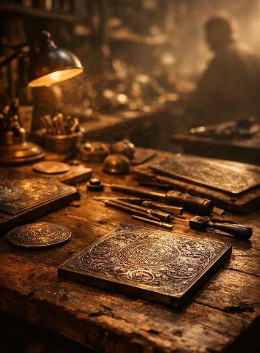
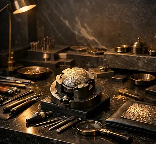
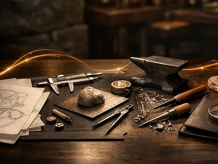
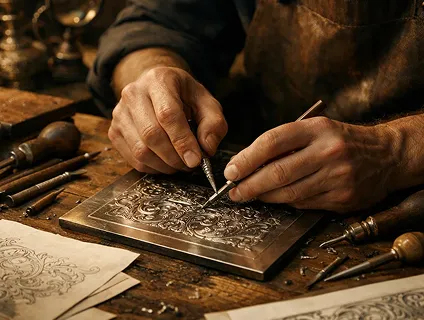
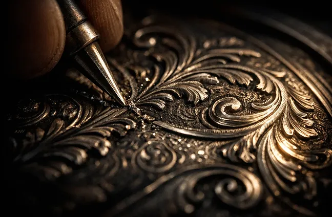

Традиции мастеров. Технологии сегодня.
История златоустовской гравюры, воплощённая в современных изделиях.

Златоустовская школа художественной гравюры
История златоустовского ремесла насчитывает более двух веков. Именно здесь сформировалась уникальная школа художественной обработки металла — от украшенного оружия до коллекционных предметов искусства.
Традиционные техники гравюры, инкрустации и ручной отделки передаются от мастера к мастеру, сохраняя характер и глубину ремесла.
Сегодня эти технологии получают современное развитие, оставаясь частью живой художественной традиции.

Собственное производство полного цикла

От идеи до готового изделия
Эскиз, моделирование, обработка металла и финальная сборка — под одной крышей.
Мастера художественной школы
Гравёры, камнерезы и художники с опытом работы в традициях златоустовского ремесла.
Современные технологии
Точное оборудование дополняет ручную работу, сохраняя глубину деталей и качество исполнения.

Художественное мастерство в деталях

Гравюра по металлу
Инкрустация и отделка
Многоступенчатая проработка
Подарок как
знак уважения
Мы создаём не сувениры, а предметы с характером и смыслом. Каждое изделие — это символ внимания, статуса и уважения к человеку, которому оно предназначено.
Для нас важно, чтобы подарок не просто выглядел дорого, а имел внутреннюю ценность и историю.